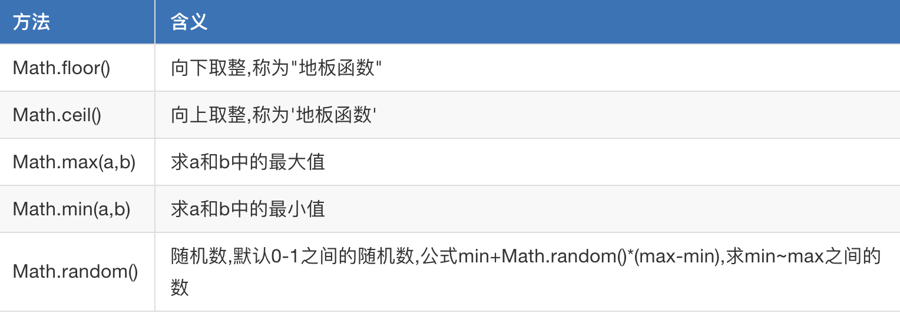

所谓内置对象就是ECMAScript提供出来的一些对象，我们知道对象都是有相应的属性和方法。
字面量方式创建（推荐大家使用这种方式）。
var colors = ['red','color','yellow'];使用构造函数（后面会讲）的方式创建，使用new关键词对构造函数进行创建对象。
var colors2 = new Array();var arr = [];
//通过下标进行一一赋值
arr[0] = 123;
arr[1] = '哈哈哈';
arr[2] = '嘿嘿嘿'var north = ['北京','山东','天津'];
var south = ['东莞','深圳','上海'];
var newCity = north.concat(south);
console.log(newCity)var score = [98,78,76,100,0];
var str = score.join('|');
console.log(str);//98|78|76|100|0var score = [98,78,76,100,0];
//toString() 直接转换为字符串 每个元素之间使用逗号隔开
var str = score.toString();
console.log(str);//98,78,76,100,0var arr = ['张三','李四','王文','赵六'];
var newArr = arr.slice(1,3);
console.log(newArr);//["李四", "王文"]var arr = ['张三','李四','王文','赵六'];
var item = arr.pop();
console.log(arr);//["张三", "李四"，"王文"]
console.log(item);//赵六var arr = ['张三','李四','王文','赵六'];
var newLength= arr.push('小马哥');//可以添加多个，以逗号隔开
console.log(newLength);//5
console.log(arr);//["张三", "李四"，"王文"，"赵六"，"小马哥"]var names = ['alex','xiaoma','tanhuang','angle'];
//4.反转数组
names.reverse();
console.log(names);var names = ['alex','xiaoma','tanhuang','abngel'];
names.sort();
console.log(names)；// ["alex", "angle", "tanhuang", "xiaoma"]布尔类型值 = Array.isArray(被检测的值) ;var arr = ['张三','李四','王文','赵六'];
var a = arr.shift();
console.log(a); //张三
console.log(arr); //['李四','王文','赵六']var arr = ['张三','李四','王文','赵六'];
var a = arr.unshift('王五');
console.log(a); //5
console.log(arr); //['王五','张三','李四','王文','赵六']字符串方法：
var str = 'alex';
var charset = str.charAt(1);
console.log(charset);//lvar str1 = 'al';
var str2 = 'ex';
console.log(str1.concat(str2,str2));//alexexvar a = '1234567755';
var newStr = a.replace("4567","****");
console.log(newStr);//123****755var str = 'alex';
console.log(str.indexOf('e'));//2
console.log(str.indexOf('p'));//-1var str = '小马哥';
console.log(str.slice(1,2));//马var str = '我的天呢,a是嘛,你在说什么呢?a哈哈哈';
console.log(str.split('a'));//["我的天呢,", "是嘛,你在说什么呢?", "哈哈哈"]var str = '我的天呢,a是嘛,你在说什么呢?a哈哈哈';
console.log(str.substr(0,4));//我的天呢var str = 'XIAOMAGE';
console.log(str.toLowerCase())；//xiaomagevar str = 'xiaomage';
console.log(str.toUpperCase());如果 indexStart 等于 indexEnd，substring 返回一个空字符串。
如果省略 indexEnd，substring 提取字符一直到字符串末尾。
如果任一参数小于 0 或为 NaN，则被当作 0。
如果任一参数大于 stringName.length，则被当作 stringName.length。
如果 indexStart 大于 indexEnd，则 substring 的执行效果就像两个参数调换了一样
主要应用是用户登录注册，因为无法预测用户输入的内容，可能会输入空格，所以输入结果可以去除空白。
var str = ' xhh ';
console.log(str);
console.log(str.trim());创建日期对象只有构造函数一种方式，使用new关键字。
//创建了一个date对象
var myDate = new Date();
//创建日期对象
var myDate=new Date();
//获取一个月中的某一天
console.log(myDate.getDate());
//返回本地时间
console.log(myDate().toLocalString());//2018/5/27 下午10:36:23注意：以上getxxx的方法都是对时间的获取，如果要设置时间，使用setxxx，请参考链接：https://www.runoob.com/jsref/jsref-obj-date.html
常用内置对象：

var x = 1.234;
//天花板函数 表示大于等于 x，并且与它最接近的整数是2
var a = Math.ceil(x);
console.log(a);//2var x = 1.234;
// 小于等于 x，并且与它最接近的整数 1
var b = Math.floor(x);
console.log(b);//1//求 两个数的最大值 最小值
console.log(Math.max(2,5));//5
console.log(Math.min(2,5));//2var ran = Math.random();
console.log(ran); //[0,1)函数：就是将一些语句进行封装，然后通过调用的形式，执行这些语句。
函数的作用：将大量重复的语句写在函数里，以后需要这些语句的时候，可以直接调用函数，避免重复劳动。
简化编程，让编程模块化。
console.log("hello world");
sayHello(); //调用函数
//定义函数：
function sayHello(){
console.log("hello");
console.log("hello world");
}函数定义的语法：
function 函数名字(){
}解释如下：
function：是一个关键字。中文是“函数”、“功能”。
函数名字：命名规定和变量的命名规定一样。只能是字母、数字、下划线、美元符号，不能以数字开头。
参数：后面有一对小括号，里面是放参数用的。
大括号里面，是这个函数的语句。
函数调用的语法：
函数名字();函数的参数包括形参和实参
注意：实际参数和形式参数的个数，要相同。
例子：
sum(3,4);
sum("3",4);
sum("Hello","World");
//函数：求和
function sum(a, b) {
console.log(a + b);
}例子：
console.log(sum(3, 4));
//函数：求和
function sum(a, b) {
return a + b;
}